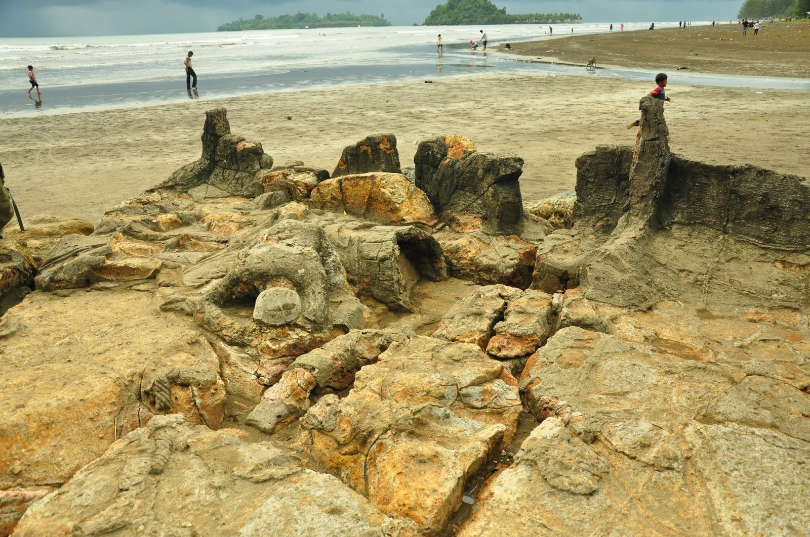

Pantai air manis
Pantai Air Manis adalah salah satu tempat wisata yang sangat direkomendasikan untuk dikunjungi bila Anda berada di Kota Padang. Di sini, Anda dapat menikmati pemandangan yang indah dengan ombak yang bergulung-gulung ditemani dengan angin sepoi-sepoi.
Ketenangan dan kenyamanan tersebut yang akan membuat Anda betah berlama-lama menghabiskan waktu di sini karena bisa merefresh pikiran.
Anda dapat berjalan menyusuri bibir pantai sambil bermain ombak. Pemandangan pantai yang indah sangat cocok dijadikan sebagai spot foto.